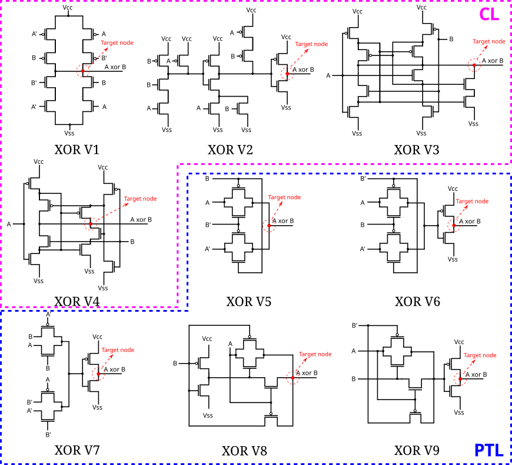
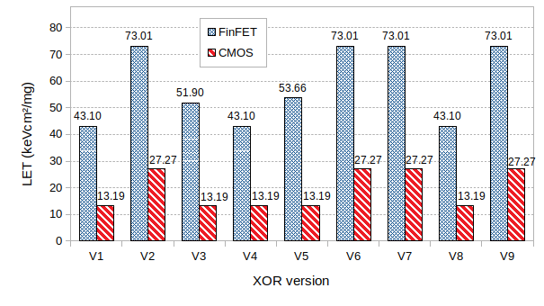

As technology scales down, digital circuits become increasingly susceptible to radiation-induced faults. This work presents a comparative analysis of the radiation sensitivity of different XOR gate topologies implemented at 16 nm using both CMOS and FinFET devices. Since XOR gates are fundamental building blocks in arithmetic and logic circuits, understanding their robustness is essential for the design of reliable nanoscale systems.
Nine XOR topologies were evaluated considering two logic styles: Complementary Logic (CL) and Pass-Transistor Logic (PTL). In addition to radiation robustness, the study also compares delay and power consumption, providing a broader view of the trade-offs involved in each implementation. This analysis helps designers select the most suitable XOR topology according to reliability and performance requirements.

The results show that PTL-based XOR gates achieve higher robustness against radiation effects than conventional CMOS-logic implementations. The improvement in LET threshold reaches nearly 30% for CMOS devices and up to 20% for FinFET devices. Moreover, FinFET-based circuits demonstrated significantly better resilience overall, being about three times more robust than CMOS implementations.

Overall, the study shows that both logic style and device technology strongly influence radiation sensitivity in nanometer circuits. Among the evaluated solutions, PTL implementations and FinFET-based designs provided the best robustness, making them attractive options for reliable digital systems operating in radiation-prone environments.